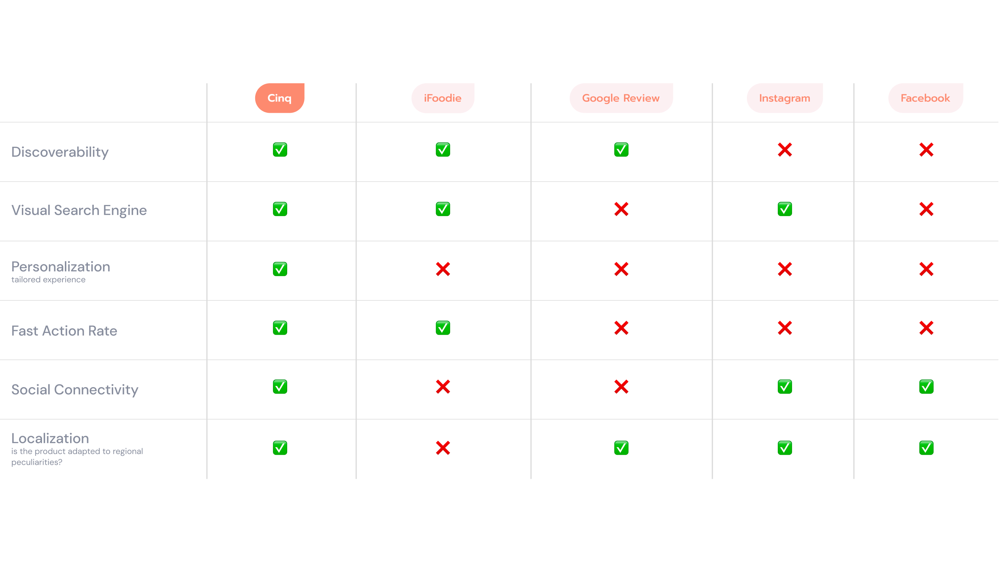
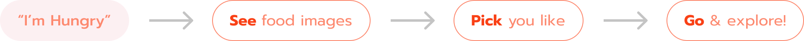
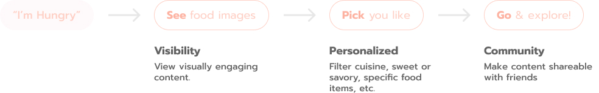

Cinq
- Founder & Product Design Lead
- Oct 2021 - Oct 2023
- San Francisco, CA
Cinq is a visual food recommendation platform to help users in Taiwan find restaurants easier. Think if Pinterest and Yelp had a baby, that would be Cinq.
Taiwan is crazy about their food culture
In Taiwan, a single street is filled with random hole-in-the-wall restaurants that serve amazing food. With intense restaurant competition, the options are endless. As a foreigner visiting, it can be overwhelming.
Getting an initial pulse
A poll in a Taiwanese American foodie group showed restaurant info is scattered across platforms. Unlike the U.S., where Yelp dominates, Taiwan lacks a centralized discovery platform.
Finding the gap
Problem Statement
Finding the most authentic and quality restaurants in Taiwan is challenging due to the constantly evolving food scene and the reliance on local knowledge. Searching on leading platforms like Yelp yields basic or tourist-oriented recommendations from expats and foreigners, while the best insights come from Taiwanese locals, personal connections, and Chinese-language sources. Discovering hidden gems requires manual effort and there is no streamlined way to access real-time, locally informed recommendations that reflect Taiwan's ever-changing food culture and the latest "best" spots to eat.
Discover restaurants seamlessly
Defining product pillars
Defining Cinq's unique value
To address the core experience of see, pick, and go; Cinq's product pillars—Personalization, Visibility, and Community—guided MVP feature prioritization.
Scroll around and see

Filter and pick

Check info before deciding

Decide and go

See, pick, and go

Try it out
Feel free to checkout the live website here.
See, pick, and go on mobile

Project Takeaways
The next step of this project needs to address the problem of finding authentic dining experiences and hidden gems without the reliance of Taiwanese locals, personal connections, and Chinese-language sources. To achieve this, we can leverage AI.
Real-Time Social Media and Blog Scraping: AI can continuously scan Taiwanese-language food blogs, social media (Dcard, PTT, Instagram, Xiaohongshu), and forums where locals discuss new food trends. It can extract common themes, frequency of mentions, and user sentiment to detect emerging "best" restaurants.
Taiwanese Search Optimization: AI could prioritize recommendations by analyzing Chinese-language search trends rather than relying on English-language sources, which often surface expat-friendly but less authentic options.
Frequent Menu and Review Analysis: Since Taiwanese restaurants frequently change, AI can track menu updates, price changes, and new dish launches, adjusting rankings based on freshness and quality.
Personalized Recommendations: If AI learns your preferences—such as a love for 臺北小吃 (Taipei street food) or specific dishes like 牛肉麵 (beef noodle soup)—it can refine results based on personal tastes and past dining experiences
Reflections
From initial research, understanding a different culture, product strategy, creating marketing channels, prototyping, and coding the website, Michelle grew a lot from taking on the full stack product designer role. Her Chinese also improved a lot in the process.
There is something unbelievably fulfilling about bringing an idea to life and helping real friends and family find places to eat for their next trip to Taipei.
Cinq was pitched to executives at Y Combinator and was chosen as top 10% of ideas in 2021 and 2022.